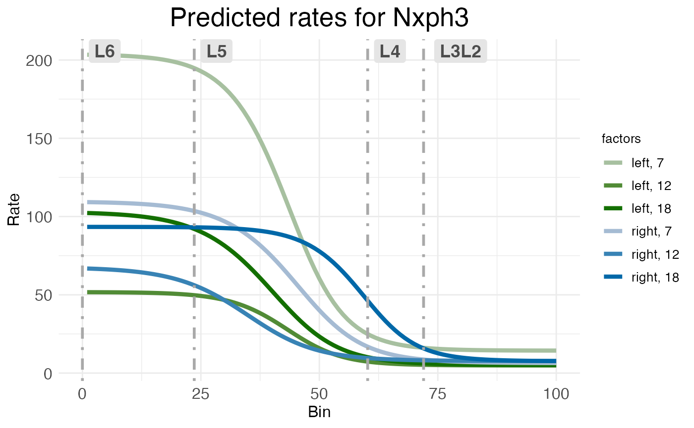
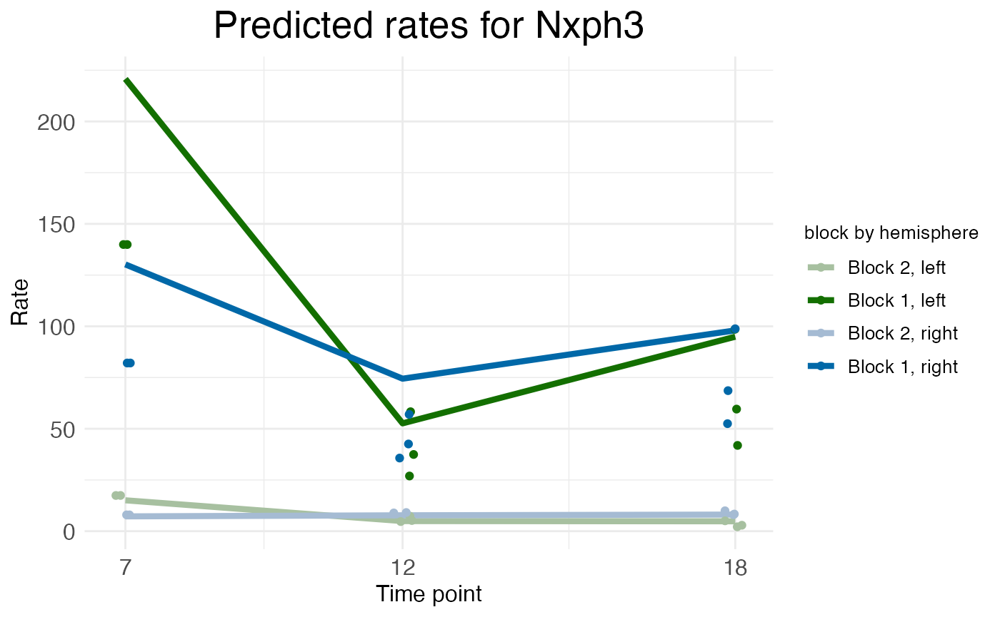

Time-series data
Michael Barkasi
2026-01-30
tutorial_timeseries.RmdIntroduction
Wisps naturally model between-group effects describable as two-valued categorical factors, e.g., comparing controls vs a treatment or male vs female. Coarse-grain comparisons over time, such as pre-hearing-onset vs post-hearing-onset or postnatal day vs postnatal day , can be shoehorned into this framework. However, it’s often desirable to model longer time series .
Time series as factor series
While wisps are limited to binary covariate fixed-effect factors , i.e., , the number of factor levels can be increased to accommodate more time points by modeling time factors as an ordered series of factors with additive effects . Given a series of time points: a corresponding time-factor series is defined with ordered binary factors: For binary factors with corresponding effect term , the effect on a model parameter is: To achieve the cumulative effect of time, the effect of a time factor , for , is given by summing the series of effects from time factors for : For a rigorous definition, suppose that in addition to the time factor , there are other fixed-effect factors each with effect . The effect of some time from will include not only and an interaction term for all , but also times for all and their respective interaction terms . Thus, the effect of can be defined to be: with the stipulation that, for each sampled data point , if then for all .
Example data: postnatal age
This tutorial will use MERFISH data collected from the auditory cortex of mice. The data has been preprocessed into laminar coordinates as described in the tutorial on modeling the cortical-laminar axis (see also this preprint). As with all data appropriate for wispack, and in line with well-known modeling functions in R (e.g., lme4::lmer(), stats::lm()), the data must be in long format. That is, each row must correspond to a single observation, which when modeling spatial transcriptomics data will typically be a count of transcripts from an RNA species in a single cell.
countdata <- read.csv(
system.file(
"extdata",
"ACx_laminar_countdata_demo.csv",
package = "wispack"
)
)
print(head(countdata))## count bin context gene mouse hemisphere age
## 1 0 96 cortex Bcl11b 1 left 12
## 2 0 95 cortex Bcl11b 1 left 12
## 3 0 98 cortex Bcl11b 1 left 12
## 4 0 100 cortex Bcl11b 1 left 12
## 5 0 99 cortex Bcl11b 1 left 12
## 6 0 99 cortex Bcl11b 1 left 12The data includes a placeholder context variable filled with “cortex”, a variable giving the hemisphere of each observation:
## [1] "left" "right"A variable giving counts (by cell) for the following six layer specific genes:
## [1] "Bcl11b" "Fezf2" "Satb2" "Nxph3" "Cux2" "Rorb"A variable giving the age (in postnatal days) of the mouse from which each cell was collected:
for (m in unique(countdata$mouse)) {
cat(
paste0(
"Mouse ", m,
" is age P", unique(countdata$age[countdata$mouse == m]),
"\n"
)
)
}## Mouse 1 is age P12
## Mouse 2 is age P18
## Mouse 3 is age P7
## Mouse 4 is age P12
## Mouse 5 is age P18Note that these three ages represent pre-hearing-onset (P7), hearing-onset (P12), and post-hearing-onset (P18). Note also that the genes in this data set are known to be localized to specific cortical layers.
| Abbreviation | Name | Layer |
|---|---|---|
| BCL11B, CTIP2 | B-cell CLL/lymphoma 11b | 5/6 |
| FEZF2 | FEZ Family Zinc Finger 2 | 5 |
| SATB2 | SATB Homeobox 2 | 2/3 |
| NXPH3 | Neurexophilin 3 | 6 |
| CUX2 | Cut like homeobox 2 | 2/3/4 |
| RORB | Retinoic acid-related orphan receptor beta | 4 |
Given that we have hemisphere and age data, we can thus model the time-dependent lateralization of layer-specific gene expression of the auditory cortex of developing mice.
Modeling time series in wispack
The parts of a wisp model must be defined, relative to the column names of the data. Wispack expects columns for the count to be modeled (count), the spatial coordinate (bin), the context, e.g., brain region or celltype (context), the species being counted, e.g., gene (species), and the random effect factor (ran).
As the data includes explicit count, bin, and context columns, these columns do not need to be redefined. As the names are different, wispack does need to be told that the RNA species data is included in the gene column and the random effect factor is given by the mouse column. Wispack will assume any unrecognized and undefined columns are fixed-effect columns, so hemisphere and age do not need to be explicitly flagged as fixed-effects. However, wispack must be told if a given fixed-effect column is to be treated as a time series factor.
# Define variables in the dataframe for the model
data.variables <- list(
species = "gene",
ran = "mouse",
timeseries = "age"
)As we’re modeling layer-specific genes, we can also grab cortical layer boundaries which were estimated for this data independent of wisp (using manual CCFv3 registration). These will only be used for plotting and visualization after fitting the model, not for fitting the model itself.
boundary_path <- system.file(
"extdata",
"ACx_layer_boundary_bins.csv",
package = "wispack"
)
layer.boundary.bins <- read.csv(boundary_path)With data loaded, variables set, and boundaries grabbed, we can fit the wisp model. As it’s not necessary for demonstrating time-series modeling, we’ll only fit the model (fit_only = TRUE) without running any statistical parameter estimation.
## Warning: package 'ggplot2' was built under R version 4.5.2
model <- wisp(
count.data = countdata,
variables = data.variables,
fit_only = TRUE,
model.settings = list(LROwindow_factor = 2.0),
plot.settings = list(
print.plots = FALSE,
dim.bounds = colMeans(layer.boundary.bins)
),
verbose = TRUE
)##
##
## Parsing data and settings for wisp model
## ----------------------------------------
##
## Model settings:
## buffer_factor: 0.05
## ctol: 1e-06
## max_penalty_at_distance_factor: 0.01
## LROcutoff: 2
## LROwindow_factor: 2
## rise_threshold_factor: 0.8
## max_evals: 1000
## rng_seed: 42
## warp_precision: 1e-07
## round_none: TRUE
## inf_warp: 450359962.73705
## allow_infeasible_params: TRUE
##
## Plot settings:
## print.plots: FALSE
## dim.bounds: 72, 60.2, 23.6, 0
## pred.type: pred
## count.type: count
## splitting_factor:
## CI_style: TRUE
## label_size: 5.5
## title_size: 20
## axis_size: 12
## legend_size: 10
## count_size: 1.5
## count_jitter: 0.5
## count.alpha.ran: 0.25
## count.alpha.none: 0.25
## pred.alpha.ran: 0.9
## pred.alpha.none: 1
##
## Variable dictionary:
## count: count
## bin: bin
## context: context
## species: gene
## ran: mouse
## timeseries: age
## fixedeffects: hemisphere, age
##
## Parsed data (head only):
## ------------------------------
## count bin context species ran hemisphere timeseries
## 1 0 96 cortex Bcl11b 1 left 12
## 2 0 95 cortex Bcl11b 1 left 12
## 3 0 98 cortex Bcl11b 1 left 12
## 4 0 100 cortex Bcl11b 1 left 12
## 5 0 99 cortex Bcl11b 1 left 12
## 6 0 99 cortex Bcl11b 1 left 12
## ----
##
## Initializing Cpp (wspc) model
## ----------------------------------------
##
## Infinity handling:
## machine epsilon: (eps_): 2.22045e-16
## pseudo-infinity (inf_): 1e+100
## warp_precision: 1e-07
## implied pseudo-infinity for unbounded warp (inf_warp): 4.5036e+08
##
## Extracting variables and data information:
## Found max bin: 100.000000
## Fixed effects:
## "hemisphere" "timeseries"
## Ref levels:
## "left" "7"
## Time series detected:
## "7" "12" "18"
## Created treatment levels:
## "ref" "right" "12" "18" "right12" "right18"
## Context grouping levels:
## "cortex"
## Species grouping levels:
## "Bcl11b" "Cux2" "Fezf2" "Nxph3" "Rorb" "Satb2"
## Random-effect grouping levels:
## "none" "1" "2" "3" "4" "5"
## Total rows in summed count data table: 21600
## Number of rows with unique model components: 216
##
## Creating summed-count data columns and weight matrix:
## Random level 0, 1/6 complete
## Random level 1, 2/6 complete
## Random level 2, 3/6 complete
## Random level 3, 4/6 complete
## Random level 4, 5/6 complete
## Random level 5, 6/6 complete
##
## Making extrapolation pool:
## row: 720/3600
## row: 1440/3600
## row: 2160/3600
## row: 2880/3600
## row: 3600/3600
##
## Making initial parameter estimates:
## Extrapolated 'none' rows
## Took log of observed counts
## Estimated gamma dispersion of raw counts
## Estimated change points
## Found average log counts for each context-species combination
## Estimated initial parameters for fixed-effect treatments
## Built initial beta (ref and fixed-effects) matrices
## Initialized random-effect warping factors
## Made and mapped parameter vector
## Number of parameters: 414
## Constructed grouping variable IDs
## Size of boundary vector: 2160
##
## Fitting model to data
## ----------------------------------------
##
## Setting boundary penalty coefficients
## Initial neg_loglik: 15281.4
## Initial neg_loglik with penalty: 15434.2
## Initial min boundary distance: 0.24777
## Final neg_loglik: 15013
## Final neg_loglik with penalty: 15120.1
## Final min boundary distance: 0.123085
## Number of evaluations: 189
## Checking feasibility of provided parameters
## ... no tpoints below buffer
## ... no NAN rates predicted
## ... no negative rates predicted
## Provided parameters are feasible
## Initial boundary distance (want > 0): 0.123085
##
## Making rate-count plots...
## Making time series plots...The weight matrix
Before examining the results, let’s look at the weight matrix.
## ref right 12 18 right12 right18
## ref 1 0 0 0 0 0
## right 1 1 0 0 0 0
## 12 1 0 1 0 0 0
## 18 1 0 1 1 0 0
## right12 1 1 1 0 1 0
## right18 1 1 1 1 1 1In this matrix, both rows and columns are labeled with the treatment levels generated by the fixed-effect factors. The first, ref, denotes no treatment, i.e., both factors are in their reference level. For hemisphere, this is left, while for age, this is P7. The other labels give the treatment level, if any, for each factor, with the rest being in the reference level. For example, right12 refers to the right hemisphere at age P12, which is a treatment condition in which both factors are in a treatment level. In contrast, right refers to the right hemisphere at age P7, which is a treatment condition in which only the hemisphere factor is in a treatment level.
This matrix is a weight matrix because the row and column labels are also labels for weights . Before warping, the predicted count of a sample is given by: where are the effect parameters and are the weights. The rows of the weight matrix give the values of the weights corresponding to the column labels under the treatment conditions given by the row labels. For example, the right12 row specifies that , , , , , and when in the treatment condition of the right hemisphere at age P12. That is, when estimating a count for a sample in the right hemisphere at age P12, the effects for the reference level, right hemisphere, age P12, and the interaction between right hemisphere and age P12 will all be included in the estimate, while the effects for age P18 and the interaction between right hemisphere and age P18 will not be included. What makes the time series additive is the way a treatment level like 18 or right18 include not only effects related to the age 18, but also effects related to all earlier ages, e.g., 12.
Visualizing time series
The rate-count wisp plot is made automatically with all calls of wisp() by an internal call to plot.ratecount(). This style of plot conveys the spatial distribution of a RNA species explicitly, by plotting space on the x-axis. It can only convey changes over a time series indirectly, via coloring of the levels of the timeseries factor. For example, consider the wisp plot for NXPH3, which shows a temporally dynamic and lateralized profile in deep layers (block 1), but almost no activity in superficial layers (block 2).
print(model$plots$ratecount$plot_pred_context_cortex_fixEff_Nxph3)
By default, when the timeseries factor is present, rate-count plots use an HCL color space, plotting time series as graduated luminance and the other factors as categorical levels of hue and chroma. In this case, left-hemisphere treatment levels are in green and right-hemisphere levels are in blue, with earlier time points dull and later time points brighter. This makes the lateralization easy to see: the dull green line for the left hemisphere at P7 is much higher than any of the blue lines for the right hemisphere. However, the temporal dynamics are harder to see and only shown implicitly. If you look closely, you should be able to see that (for the deep layers) for both left (green) and right (blue), the dullest line (P7) is the highest, the medium-brightness line (P12) is the lowest, and the brightest line (P18) is in between. This suggests that NXPH3 expression in deep layers dips at P12 relative to P7, then rises again in P18.
While this trend can be discerned from the spatial wisp plot, wispack offers another kind of plot for plotting time-series data which makes the trend obvious at a glance while also clarifying it. These time-series plots are made automatically by the wisp() function when a time series is provided or detected, through an internal call to the plot.timeseries() function.
print(model$plots$timeseries$plot_pred_context_cortex_timeseries_Nxph3)
Wisp time-series plots keep the y-axis a representation of rate, but switch the x-axis to a representation of the time-series points. However, the spatial aspect of the data is not completely lost. Instead of plotting the predicted rate on the y-axis, which would include not only the rate parameter but also the effects of transition-point location and transition-point slope, the time-series plot instead plots just the rate parameter itself. This parameter is a vector, each element of which is the rate for a block of space defined by transition points. In the NXPH3 time-series plot above, the dip in expression at P12 in the deep layers (block 1) can be seen more clearly.
Notice that the colors in the time-series plots (blue and orange) are different from those in the rate-count plots (blue and green). This is to avoid suggesting that there’s a direct correspondence between plot coloring. The coloring structures data within a plot type, but not across plot types.
We could plot and discuss the rest of the layer-specific genes in this data set, but the plots (as produced by these function calls) are messy. This is because this analysis of the data does not account for how gene expression depends on cell type. To properly analyze this data, we need to include cell type in the model as well. This is explained in the cell type tutorial, which also includes all plots.